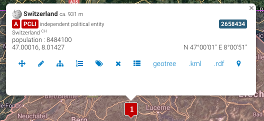

Named Entities
Encoding Names, Persons, Places and Dates
Content
- Names. Persons↡(3-21)
- Names. Places↡(22-28)
- Dates↡(29-32)
- References↡(33)
TEI NAMES. PERSONS
Persons, Places, Dates
“I was born in the year 1632, in the city of York, of a good family, though not of that country, my father being a foreigner of Bremen, who settled first at Hull. He got a good estate by merchandise, and leaving off his trade, lived afterwards at York, from whence he had married my mother, whose relations were named Robinson, a very good family in that country, and from whom I was called Robinson Kreutznaer"
Persons, Places, Dates
“I was born in the year 1632, in the city of York, of a good family, though not of that country, my father being a foreigner of Bremen, who settled first at Hull. He got a good estate by merchandise, and leaving off his trade, lived afterwards at York, from whence he had married my mother, whose relations were named Robinson, a very good family in that country, and from whom I was called Robinson Kreutznaer”
Referring string
“I was born in the year 1632, in the city of York, of a good family, though not of that country, my father being a foreigner of Bremen, who settled first at Hull. He got a good estate by merchandise, and leaving off his trade, lived afterwards at York, from whence he had married my mother, whose relations were named Robinson, a very good family in that country, and from whom I was called Robinson Kreutznaer”
Names in TEI
The TEI provides several ways of marking up names and nominal expressions.
-
Core module
- <rs> contains a string which refers to a person or place: "my mother", "he".
- <name> contains a proper noun: "Robinson Kreutznaer", "Bremen".
- @type differentiates persons and places.
- <persName>, <placeName>, <orgName>, <surname>, <forename>.
More precise (extended module)
Encoding of names using the element <name>
I was born in the year 1632, in the city of York , of a good family, though not of that country, my father being a foreigner of Bremen , who settled first at Hull . He got a good estate by merchandise, and leaving off his trade, lived afterwards at York , from whence he had married my mother, whose relations were named Robinson, a very good family in that country, and from whom I was called Robinson Kreutznaer Add the attribute @type to differenciate types of names
I was born in the year 1632, in the city of York , of a good family, though not of that country, my father being a foreigner of Bremen , who settled first at Hull . He got a good estate by merchandise, and leaving off his trade, lived afterwards at York , from whence he had married my mother, whose relations were named Robinson, a very good family in that country, and from whom I was called Robinson Kreutznaer More precise tagging: namesdates module
He got a good estate by merchandise, and leaving off his trade, lived afterwards at <placeName>York</placeName>, from whence he had married my mother, whose relations were named Robinson, a very good family in that country, and from whom I was called
<persName>
<forename>Robinson</forename>
<surname>Kreutznaer</surname>
</persName>
Components of personal names
- <forename>, a forename or given name.
- <surname>, a family name.
- <roleName>, role or position in society (President, Queen).
- <addName>, nickname, pseudonym, alias.
- <nameLink>, connecting phrase or link (de, of, van, von).
<persName>
<forename>Marie-Henri</forename>
<surname>Beyle</surname>
<addName type="pseudonym">Stendhal</addName>
</persName>Signs in the text vs. the thing signs refer to
Signifiant (signifier) vs. Signifié (signified)
"[...] and from whom I was called Robinson Kreutznaer; but, by the usual corruption of words in England, we are now called —nay we call ourselves and write our name— Crusoe; and so my companions always called me."
Robinson Crusoe
TEI distintion: <persName> vs. <person>
Encoding of references
I was called <persName>Robinson Kreutznaer </persName>; but, by the usual corruption of words in <placeName>England</placeName>, we are now called —nay we call ourselves and write our name— <persName>Crusoe</persName>Encoding of referenced entities
<person>
<persName>
<forename>Robinson</forename>
<surname xml:lang="en" type="corrupted">Crusoe</surname>
<surname xml:lang="de" type="birth">Kreutznaer</surname>
</persName>
<birth when="1632">1632 <placeName>York</placeName>
</birth>
</person>Organising named entities
- Usually stored in the <teiHeader>
<teiHeader>
<fileDesc>...</fileDesc>
<profileDesc>
<particDesc>
<listPerson>
<person>...</person>
<person>...</person>
</listPerson>
</particDesc>
<settingDesc>
<listPlace>
<place>...</place>
</listPlace>
</settingDesc>
</profileDesc>
</teiHeader>- Create a separate XML file using <listPerson> entries.
Linking the association with @xml:id ← @ref
<profileDesc>
<particDesc>
<listPerson>
<person xml:id="RC">
<persName>
<forename>Robinson</forename>
<surname type="corrupted">Crusoe</surname>
<surname type="birth">Kreutznaer</surname>
</persName>
<birth when="1632">1632</birth>
</person>
</listPerson>
</particDesc>
</profileDesc>
and from whom I was called <persName ref="#RC">Robinson Kreutznaer</persName>; but, by the usual corruption of words in England, we are now called —nay we call ourselves and write our name— <persName ref="#RC">Crusoe</persName>; and so my companions always called me.
Attribute @ref as pointing mechanism
Entity defined within the same XML document <persName ref="#RC">Robinson Kreutznaer</persName>
In some other place, refered to by means of an URI <persName ref="http://www.example.com/fictionalcharacters.xml#RC">Robinson Kreutznaer</persName>
Reference an existing authority file<persName ref="http://www.isni.org/0000000123478267">Daniel Defoe</persName>
Authority files: catalogs of names
- VIAF: Virtual International Authority
- ISNI: International Standard Name Identifier (ISO Standard)
- Most national libraries: Bibliothèque nationale de France; Deutsche Nationalbibliothek
- Perseus Digital Library: Classic authors
(other way of) Referencing authority files
Identifier in the <idno> element
<person xml:id="S1783">
<persName>
<forename>Marie-Henri</forename>
<surname>Beyle</surname>
<addName type="pseudonym">Stendhal</addName>
</persName>
<birth when="1783-01-23">23-01-1783</birth>
<death when="1842-03-23">23-03-1842</death>
<occupation>writer</occupation>
<nationality>French</nationality>
<idno type="ISNI">0000000120981326</idno>
</person>
<person xml:id="S1783">
<persName>
<forename>Marie-Henri</forename>
<surname>Beyle</surname>
<addName type="pseudonym">Stendhal</addName>
</persName>
<birth when="1783-01-23">23-01-1783</birth>
<death when="1842-03-23">23-03-1842</death>
<occupation>writer</occupation>
<nationality>French</nationality>
<idno type="ISNI">0000000120981326</idno>
</person>
more info for person?
<birth>, <death>, <event>, <langKnowledge>, <faith>, <nationality>, <sex>, <age>, <occupation>, <note>, ...TEI PLACES
TEI distintion: <placeName> vs. <place>
Encoding of references
I was born in the year 1632, in the city of <placeName>York</placeName>, of a good family, though not of that <rs>country</rs>Encoding of referenced entities
<profileDesc>
<particDesc>
<listPerson>...</listPerson>
</particDesc>
<settingDesc>
<listPlace>
<place xml:id="york">
<placeName>York</placeName>
<location>
<!--lat, long-->
<geo>53.95767,-1.082304</geo>
</location>
<idno type="GeoNames">2633352</idno>
</place>
</listPlace>
</settingDesc>
</profileDesc>Geo-political place names
Components of place names
- <bloc> geo-political unit containing two or more nation states: Europe.
- <country> geo-political unite: Italy.
- <region> administrative unite: Lazio.
- <settelment> name of a settlement: Rome.
- <district> subdivision of a settlement: Trastevere.
Components of place names
- <location>
- geographical coordinates
- <geo>
- place name components
- an address
- <address>
- geographical coordinates
Gazetteers: catalogs of places
- GeoNames
- Pleiades (ancient places)
- Peripleo (hub of gazetteers)
- European Comision (batch geocoding)
- Geolocation via gazetteers APIs
Fictional places
<place type="fictional">
<placeName>Atlantis</placeName>
<location>
<offset>fifty leagues beyond</offset>
<placeName>The Pillars of <persName>Hercules</persName></placeName>
</location>
</place>TEI DATES
- <date> a date in any format
- <time> a phrase defining a time of day in any format
Core module: 3.5.4 Dates and Times
I was born in the year <date when="1632">1632</date>, in the city of <placeName ref="#york">York</placeName>, of a good family, though not of that countryAttributes for date
- @when value of the date or time.
- @notBefore the earliest possible date.
- @notAfter the latest possible date.
- @from indicates the starting point of a period.
- @to indicates the ending point of a period.
To normalize elements that contain dates, times, etc. in standard form (jjjj-mm-dd):
@when a useful way of normalizing or disambiguating
<birth when="1788-02-22">22 February 1788</birth>
<birth when="1788-02-22">22 de febrero de 1788</birth>
<birth when="1788-02-22">22 février 1788</birth>
<birth when="1788-02-22">22/02/1788</birth>References
- A Gentle Introduction to XML, Guidelines for Electronic Text Encoding and Interchange, TEI P5: Version 3.5.0.
- digital.humanities @ Oxford, TEI @ Oxford Teaching Pages.
- Lou Burnard (2014), What is the Text Encoding Initiative? How to add intelligent markup to digital resources , Marseille: OpenEdition Press.
- Christof Schöch (2014), Digitale Textedition mit TEI, DARIAH TEI-Tutorial.
- Martina Scholger (2017), Names, dates, people and places.